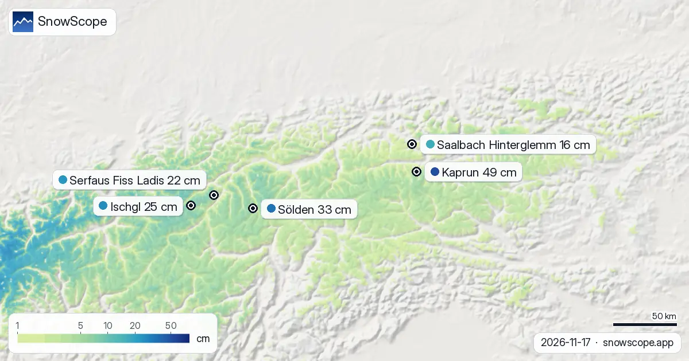

Oostenrijk: waar valt tot 20 november de meeste verse sneeuw? Tot 20 cm in Ischgl
12 van de 12 skigebieden die we volgen in Oostenrijk hebben op dinsdag 17 november sneeuw boven op de piste; Kaprun staat bovenaan met 49 cm.
Bekijk de sneeuwverwachting voor Ischgl in de SnowScope-appSneeuwhoogte, alerts en de 3D-kaart, gratis.
Sneeuw onderweg
Tot en met 20 november geeft de verwachting Ischgl 20 cm, Serfaus Fiss Ladis 18 cm en Saalbach Hinterglemm 14 cm.
| Skigebied | Sneeuwhoogte | Verse sneeuw, 72 u | Komende dagen | Top |
|---|---|---|---|---|
| Ischgl | 25 cm | 9 cm | 20 cm | 2.868 m |
| Serfaus Fiss Ladis | 22 cm | 8 cm | 18 cm | 2.817 m |
| Saalbach Hinterglemm | 16 cm | 3 cm | 14 cm | 2.090 m |
| Kaprun | 49 cm | 5 cm | 11 cm | 3.024 m |
| Sölden | 33 cm | 6 cm | 11 cm | 3.247 m |
| Hochzillertal-Hochfügen | 30 cm | 5 cm | 10 cm | 2.374 m |

Wat er in drie dagen viel
Meeste verse sneeuw in 72 uur: Ischgl 9 cm, Serfaus Fiss Ladis 8 cm en Sölden 6 cm.
De top drie in detail
Ischgl heeft boven 25 cm; de liften gaan tot 2.868 m. Verse sneeuw: 9 cm in drie dagen, verwachting 20 cm tot en met 20 november.
Serfaus Fiss Ladis: 22 cm boven op de piste (hoogste lift 2.817 m), 8 cm verse sneeuw in 72 uur, tot en met 20 november nog 18 cm.
Saalbach Hinterglemm: 16 cm boven op de piste (hoogste lift 2.090 m), 3 cm verse sneeuw in 72 uur, tot en met 20 november nog 14 cm.
Kaprun heeft boven 49 cm; de liften gaan tot 3.024 m. Verse sneeuw: 5 cm in drie dagen, verwachting 11 cm tot en met 20 november.
Sneeuw boven op de piste
De helft van de 12 skigebieden hier heeft boven meer dan 29 cm, de andere helft minder.
Daarna: Hintertuxer Gletscher (41 cm), Zillertal Arena (36 cm), Sölden (33 cm) en Hochzillertal-Hochfügen (30 cm).
Als je twee dagen hebt
Meeste sneeuw voor je geld bij twee skidagen: Kaprun, met nu 49 cm en tot en met 20 november nog 11 cm erbij.
Voor een weekend liggen de Duitse middelgebergten binnen een dagtrip met de auto; voor Oostenrijk plan je beter minstens drie nachten.
Off-piste en toerskiën
Zonder verse sneeuw: 's ochtends op de geprepareerde pistes blijven en later zachtere sneeuw zoeken op zonnige hellingen. Elk off-pisteplan begint met het lokale lawinebulletin.
Zonder veel verse sneeuw zijn de geprepareerde pistes de beste keuze: 's ochtends hard, rond het middaguur zachter aan de zonkant.
Tips voor skiërs
- Begin vroeg: na een koude nacht is de sneeuw in de eerste uren het best.
- Winterbanden of sneeuwkettingen voor de laatste kilometers naar de hoge skigebieden.
- Off-piste alleen na het lezen van het lawinebulletin.
About these numbers
Resort snow depths are the deepest snow on the resort's upper slopes from the SnowScope snow model (about 1 km, run of 17 november); they are estimates for an area, not a measurement at one point. Station values are measurements on the date shown. Forecasts can change. Always read the official avalanche bulletin before going off-piste.
Cite this report
For research, teaching or the press: the numbers and charts are free to reuse under CC BY 4.0 with this citation.
SnowScope (2026), Oostenrijk: waar valt tot 20 november de meeste verse sneeuw? Tot 20 cm in Ischgl, https://snowscope.app/blog/nl/2026/11/verse-sneeuw-oostenrijk-17-november-2026.html, accessed 2026-11-17
SnowScope (Atlas Labs). (2026, November 17). Oostenrijk: waar valt tot 20 november de meeste verse sneeuw? Tot 20 cm in Ischgl. SnowScope snow reports. https://snowscope.app/blog/nl/2026/11/verse-sneeuw-oostenrijk-17-november-2026.html
BibTeX
@misc{snowscope2026versesneeuwoostenrijk17n,
author = {{SnowScope (Atlas Labs)}},
title = {Oostenrijk: waar valt tot 20 november de meeste verse sneeuw? Tot 20 cm in Ischgl},
year = {2026},
month = nov,
howpublished = {\url{https://snowscope.app/blog/nl/2026/11/verse-sneeuw-oostenrijk-17-november-2026.html}},
note = {Published 2026-11-17 17:35 UTC; accessed 2026-11-17}
}· CC BY 4.0 · Methods, data and tools →
Ischgl: snow and temperature by height, this winter vs last (tools) →
Follow Ischgl
Gratis: een bericht als er verse sneeuw komt, en elke ochtend de verwachting.